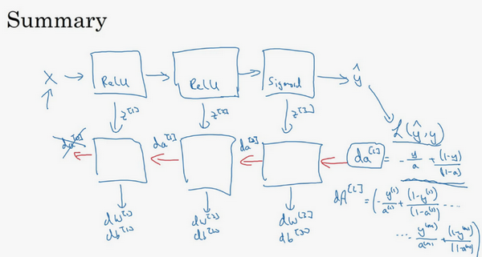

深度神经网络
Table of Contents
目前为止学习了只有一个单独隐藏层的神经网络的正向传播和反向传播，还有逻辑回归 并且还学到了向量化，这在随机初始化权重时是很重要 接下来要做的是把这些理念集合起来，这样就可以执行你自己的深度神经网络
深层神经网络
复习下前面的内容：
逻辑回归和一个隐藏层的神经网络，结构如下：

注意，神经网络的层数是这么定义的： 从左到右，由0开始定义 ，比如上边右图 \(x_1\) , \(x_2\) , \(x_3\) 这层是第 \(0\) 层，这层右边的隐藏层是第 \(1\) 层，由此类推。如下图左边是两个隐藏层的神经网络，右边是5个隐藏层的神经网络：

严格上来说逻辑回归也是一个一层的神经网络，而上边右图是一个深得多的模型：
- 有一个隐藏层的神经网络，就是一个两层神经网络
- 当算神经网络的层数时，不算输入层，只算 隐藏层 和 输出层
但是在过去的几年中，研究者已经意识到有一些函数，只有非常深的神经网络能学会，而更浅的模型则办不到
尽管对于任何给定的问题很难去提前预测到底需要多深的神经网络，可以先去尝试逻辑回归，尝试一层然后两层隐含层
然后把隐含层的数量看做是另一个可以自由选择大小的超参数，再保留交叉验证数据上评估，或者用开发集来评估
现在来看下深度学习的符号定义：

上图是一个4层的神经网络，有 3 个隐藏层
可以看到，第一层有5个神经元数目，第二层5个，第三层3个
用 \(L\) 表示层数： \(\mathbf{L} = 4\) , 输入层的索引为 \(0\) ：
- 第一个隐藏层 \(n^{[1]} = 5\) 表示有5个隐藏神经元
- 同理 \(n^{[2]} = 5\) , \(n^{[3]} = 3\) , \(n^{[4]} = 1\) （输出单元为1）
- 输入层 \(n^{[0]} = n_x = 3\)
在不同层所拥有的神经元的数目，对于每层 \(a^{[l]}\) 都用来记作 \(l\) 层激活后结果
会在后面看到在正向传播时，最终能会计算出这个结果
- 通过用激活函数 \(g\) 计算 \(z^{[l]}\) ，激活函数也被索引为层数 \(l\) , 然后用 \(w^{[l]}\) 来记作在 \(l\) 层计算值的 权重
- 类似的也有 \(b^{[l]}\)
- 输入的特征记作 \(x\) ，但是 \(x\) 同样也是 \(0\) 层的激活函数，所以 \(x = a^{[0]}\)
- 最后一层 \(a^{[L]}\) 等于这个神经网络所预测的输出结果
前向传播
之前学习了构成深度神经网络的基本模块
比如每一层都有前向传播步骤以及一个相反的反向传播步骤
前向传播：输入 \(a^{[l-1]}\) ，输出 \(a^{[l]}\) ，缓存为 \(z^{[l]}\) ；从实现的角度来可以缓存下 \(w^{[l]}\) 和 \(b^{[l]}\) ，这样更容易在不同的环节中调用函数

前向传播的步骤：
\begin{equation} z^{[l]} = W^{[l]} \cdot a^{[l-1]} + b^{[l]} \\ a^{[l]} = g^{[l]}(z^{[l]}) \end{equation}向量化实现过程：
\begin{equation} Z^{[l]} = W^{[l]} \cdot A^{[l-1]} + b^{[l]} \\ A^{[l]} = g^{[l]}(Z^{[l]}) \end{equation}前向传播需要喂入 \(A^{[0]}\) 也就是 \(X\) ，来初始化；初始化的是第一层的输入值。\(a^{[0]}\) 对应于一个训练样本的输入特征，而 \(A^{[0]}\) 对应于一整个训练样本的输入特征
所以这就是这条链的第一个前向函数的输入，重复这个步骤就可以从左到右计算前向传播
反向传播
输入为 \(\mathrm{d} a^{[l]}\) ，输出为 \(\mathrm{d} a^{[l-1]}\) ，\(\mathrm{d} w^{[l]}\) , \(\mathrm{d} b^{[l]}\)

反向传播的步骤：
\begin{equation} \mathrm{d} z^{[l]} = \mathrm{d} a^{[l]} \ast g^{[l]^{'}}(z^{[l]}) \end{equation} \begin{equation} \mathrm{d} w^{[l]} = \mathrm{d} z^{[l]} \cdot a^{[l-1]} \end{equation} \begin{equation} \mathrm{d} b^{[l]} = \mathrm{d} z^{[l]} \end{equation} \begin{equation} \mathrm{d} a^{[l-1]} = w^{[l]T} \cdot \mathrm{d} z^{[l]} \end{equation} \begin{equation} \mathrm{d} z^{[l]} = w^{[l+1]T}\mathrm{d} z^{[l+1]} \ast g^{[l]^{'}}(z^{[l]}) \end{equation}式子（5）由式子（4）带入式子（1）得到，前四个式子就可实现反向函数
向量化实现过程：
\begin{equation} \mathrm{d} Z^{[l]} = \mathrm{d} A^{[l]} \ast g^{[l]^{'}}(Z^{[l]}) \end{equation} \begin{equation} \mathrm{d} W^{[l]} = \frac{1}{m}\mathrm{d} Z^{[l]} \cdot A^{[l-1]T} \end{equation} \begin{equation} \mathrm{d} b^{[l]} = \frac{1}{m} np.sum(\mathrm{d} z^{[l]}, \text{axis} = 1, \text{keepdims} = True) \end{equation} \begin{equation} \mathrm{d} A^{[l-1]} = W^{[l]T} \cdot \mathrm{d} Z^{[l]} \end{equation}总结：

- 第一层可能有一个 \(ReLU\) 激活函数，第二层为另一个 \(ReLU\) 激活函数，第三层可能是\(sigmoid\) 函数（如果做二分类的话），输出值为 \(\hat{y}\) ，用来计算损失
- 这样就可以向后迭代进行反向传播求导来求 \(\mathrm{d} w^{[3]}\) , \(\mathrm{d} b^{[3]}\) , \(\mathrm{d}w^{[2]}\) , \(\mathrm{d} b^{[2]}\) , \(\mathrm{d} w^{[1]}\) , \(\mathrm{d} b^{[1]}\)
- 在计算的时候，缓存会把 \(z^{[1]}\) , \(z^{[2]}\) , \(z^{[3]}\) 传递过来，然后回传 \(\mathrm{d} a^{[2]}\) , \(\mathrm{d} a^{[1]}\)
- 也可以计算 \(\mathrm{d}a^{[0]}\) ，但实际不会使用它
这里讲述了一个三层网络的前向和反向传播
深层网络中的前向传播
跟往常一样，先来看对其中一个训练样本如何应用前向传播，之后讨论向量化的版本
- 第一层需要计算 \(z^{[l]} = w^{[1]}x + b^{[1]}\) ， \(a^{[1]} = g^{[1]}(z^{[1]})\) （ \(x\) 可以看做 \(a^{[0]}\) ）
- 第二层需要计算 \(z^{[2]} = w^{[2]}a^{[1]} + b^{[2]}\) ， \(a^{[2]} = g^{[2]}(z^{[2]})\)
- 以此类推
- 第四层为 \(z^{[4]} = w^{[4]}a^{[3]} + b^{[4]}\) ， \(a^{[4]} = g^{[4]}(z^{[4]})\)
前向传播可以归纳为多次迭代 \(z^{[l]} = w^{[l]}a^{[l-1]} + b^{[l]}\) ， \(a^{[l]} = g^{[l]}(z^{[l]})\)

向量化实现过程可以写成：
\begin{equation} Z^{[l]} = W^{[l]}A^{[l-1]} + b^{[l]} \\ A^{[l]} = g^{[l]}(Z^{[l]}) \\ A^{[0]} = X \end{equation}这里不得不用一个显式for循环，从第一层开始接着一层层去计算直到第 \(L\) 层
核对矩阵的维数
当实现深度神经网络的时候，其中一个常用的检查代码是否有错的方法就是拿出一张纸过一遍算法中矩阵的维数：
- \(w\) 的维度是（下一层的维数，前一层的维数），即 \(w^{[l]}:(n^{[l]}, n^{[l-1]})\)
- \(b\) 的维度是（下一层的维数，1），即: \(b^{[l]}: (n^{[l]}, 1)\)
- 类似地： \(z^{[l]}, a^{[l]}: (n^{[l]}, 1)\)
- \(\mathrm{d} w^{[l]}\) 与 \(w^{[l]}\) 维度相同
- \(\mathrm{d} b^{[l]}\) 与 \(b^{[l]}\) 维度相同
\(w\) 和 \(b\) 向量化维度不变，但 \(z\), \(a\) 以及 \(x\) 的维度向量化后会改变

向量化后：
- \(Z^{[l]}\) 可以看成由每一个单独的 \(z^{[l]}\) 叠加而得到 \(Z^{l} = (z^{[l](1)}, z^{[l](2)}, \ldots , z^{[l](m)})\) , \(m\) 为训练集大小，所以的 \(Z^{[l]}\) 维度不再是 \((n^{[l]}, 1)\) ，而是 \((n^{[l]}, m)\)
- 同样地： \(A^{[l]}: (n^{[l]}, m)\) , 特别地： \(A^{[0]} = X: (n^{[0]}, m)\)

在你做深度神经网络的反向传播时，一定要确认所有的矩阵维数是前后一致的，可以大大提高代码通过率
接下来是为什么深层的网络在很多问题上比浅层的好
为什么使用深层表示？
我们都知道深度神经网络能解决好多问题
其实并不需要很大的神经网络，但是得有深度，得有比较多的隐藏层
一起来看几个例子来帮助理解，为什么深度神经网络会很好用
深度网络在计算什么？

如果在建一个人脸识别或是人脸检测系统，深度神经网络所做的事就是输入一张脸部的照片。可以把深度神经网络的第一层，当成一个 特征探测器 或者边缘探测器。我会建一个大概有20个隐藏单元的深度神经网络，隐藏单元就是这些图里这些小方块（第一张大图）
举个例子，这个小方块（第一行第一列）就是一个隐藏单元，它会去找这张照片里“|”边缘的方向
那么这个隐藏单元（第四行第四列），可能是在找（“—”）水平向的边缘在哪里
之后的课程里，会讲专门做这种识别的卷积神经网络，到时候会细讲
为什么小单元是这么表示的？可以先把神经网络的第一层当作看图，然后去找这张照片的各个边缘。把照片里组成边缘的像素们放在一起看，这就把探测到的边缘组合成 面部的不同部分 （第二张大图）
比如说，可能有一个神经元会去找眼睛的部分，另外还有别的在找鼻子的部分
然后把这许多的边缘结合在一起，就可以开始检测人脸的不同部分
后再把这些部分放在一起，比如鼻子眼睛下巴，就可以识别或是探测不同的人脸（第三张大图） 。可以直觉上把这种神经网络的前几层当作探测简单的函数，比如边缘，之后把它们跟后几层结合在一起，那么总体上就能学习更多复杂的函数
这些图的意义，在学习卷积神经网络的时候再深入了解
还有一个技术性的细节需要理解的是，边缘探测器其实相对来说都是针对照片中非常小块的面积。就像这块（第一行第一列），都是很小的区域。面部探测器就会针对于大一些的区域
但是主要的概念是，一般会从比较小的细节入手，比如边缘
然后再一步步到更大更复杂的区域，比如一只眼睛或是一个鼻子
再把眼睛鼻子装一块组成更复杂的部分

这种从简单到复杂的金字塔状表示方法或者组成方法，也可以应用在图像或者人脸识别以外的其他数据上
比如想要建一个语音识别系统的时候，需要解决的就是如何可视化语音
比如输入一个音频片段，那么神经网络的第一层可能就会去先开始试着探测比较低层次的音频波形的一些特征，音调是变高了还是低了，分辨白噪音，咝咝咝的声音，或者音调
选择这些相对程度比较低的波形特征，然后把这些波形组合在一起就能去探测声音的基本单元
在语言学中有个概念叫做音位，比如说单词ca，c的发音，“嗑”就是一个音位，a的发音“啊”是个音位，t的发音“特”也是个音位
有了基本的声音单元以后，组合起来，就能识别音频当中的单词
单词再组合起来就能识别词组，再到完整的句子
所以深度神经网络的这许多隐藏层中，较早的前几层能学习一些低层次的简单特征，等到后几层，就能把简单的特征结合起来，去探测更加复杂的东西
比如录在音频里的单词、词组或是句子，然后就能运行语音识别了
同时所计算的之前的几层，也就是相对简单的输入函数，比如图像单元的边缘什么的
到网络中的深层时，实际上就能做很多复杂的事，比如探测面部或是探测单词、短语或是句子
有些人喜欢把深度神经网络和人类大脑做类比，这些神经科学家觉得人的大脑也是先探测简单的东西
眼睛看得到的边缘，然后组合起来才能探测复杂的物体，比如脸
这种深度学习和人类大脑的比较，有时候比较危险
但是不可否认的是，对大脑运作机制的认识很有价值
有可能大脑就是先从简单的东西，比如边缘着手，再组合成一个完整的复杂物体
这类简单到复杂的过程，同样也是其他一些深度学习的灵感来源
- Small ：隐藏单元的数量相对较少
- Deep ：隐藏层数目比较多
深层的网络隐藏单元数量相对较少，隐藏层数目较多。如果浅层的网络想要达到同样的计算结果则需要 指数级增长 的单元数量才能达到
为啥需要指数级别呢？ 来看另外一个，关于神经网络为何有效的理论
另外一个理论来源于电路理论，它和能够用电路元件计算哪些函数有着分不开的联系。根据不同的基本逻辑门，譬如 与门 、 或门 、 非门
在非正式的情况下，这些函数都可以用相对较小，但很深的神经网络来计算
小在这里的意思是隐藏单元的数量相对比较小
但是如果用浅一些的神经网络计算同样的函数，也就是说在不能用很多隐藏层时，会需要成指数增长的单元数量才能达到同样的计算结果

假设想要对输入特征计算异或或是奇偶性，可以算 \(x_1\mathbf{XOR}x_2\mathbf{XOR}x_3\mathbf{XOR} \ldots x_n\) ，假设有 \(n_x\) 个特征，如果画一个异或的树图，先要计算 \(x_1\) , \(x_2\) 的异或，然后 \(x_3\) 是和 \(x_4\) 。技术上来如果只用 或门 ，还有 非门 的话，可能会需要几层才能计算异或函数，但是用相对小的电路，应该就可以计算异或了。然后可以继续建这样的一个异或树图（上图左），那么最后会得到这样的电路来输出结果 \(y\) , \(\hat{y} = y\) 也就是输入特征的异或，或是奇偶性，要计算异或关系。这种树图对应网络的深度应该是 \(O(\log{n})\) ，那么节点的数量和电路部件，也就是是门的数量并不会很大，也不需要太多门去计算异或
但是如果不能使用多隐层的神经网络的话，比如被迫只能用单隐藏层来计算的话，这里全部都指向从这些隐藏单元到后面这里，再输出 \(y\) ，那么要计算奇偶性，或者异或关系函数就需要这一隐层（上图右方框部分）的单元数呈指数增长才行，因为本质上来说需要列举耗尽 \(2^n\) 种可能的配置，或是 \(2^n\) 种输入比特的配置。异或运算的最终结果是 \(1\) 或 \(0\) ，那么最终就会需要一个隐藏层，其中单元数目随输入比特指数上升。精确的说应该是个 \(2^{n-1}\) 隐藏单元数，也就是 \(O(2^n)\)
这种电路理论，对训练直觉思维没那么有用
但这个结果人们还是经常提到的，用来解释为什么需要更深层的网络
此外 深度学习 这个名字挺唬人的，这些概念以前都统称为有很多隐藏层的神经网络
但是深度学习听起来多高大上，这个词流传出去以后，这是神经网络的重新包装或是多隐藏层神经网络的重新包装，激发了大众的想象力
抛开这些公关概念重新包装不谈，深度网络确实效果不错，有时候人们还是会按照字面意思钻牛角尖，非要用很多隐层
但是当开始解决一个新问题时，通常会从logistic回归开始
再试试一到两个隐层
把隐藏层数量当作参数、超参数一样去调试，这样去找比较合适的深度
但是近几年以来，有一些人会趋向于使用非常非常深邃的神经网络，比如好几打的层数
某些问题中只有这种网络才是最佳模型
搭建神经网络块
已经看到过正向反向传播的基础组成部分了，它们也是深度神经网络的重要组成部分 现在来用它们建一个深度神经网络

这是一个层数较少的神经网络，选择其中一层（方框部分），从这一层的计算着手：
- 在第 \(l\) 层有参数 \(W^{[l]}\) 和 \(b^{[l]}\)
- 正向传播里有输入的激活函数，输入是前一层 \(a^{[l-1]}\) ，输出是 \(a^{[l]}\)
- 根据 \(z^{[l]} = W^{[l]}a^{[l-1]} + b^{[l]}\) , \(a^{[l]} = g^{[l]}(z^{[l]}\) ，这就是如何从输入 \(a^{[l-1]}\) 走到输出的 \(a^{[l]}\)
- 之后可以把 \(z^{[l]}\) 的值缓存起来，因为缓存的 \(z^{[l]}\) 对以后的反向传播的步骤非常有用
接下来是反向步骤步骤，同样也是第 \(l\) 层的计算，会需要实现一个函数输入为 \(\mathrm{d} a^{[l]}\) ，输出的函数 \(\mathrm{d} a^{[l-1]}\)
- 输入在这里其实是 \(\mathrm{d} a^{[l]}\) 以及所缓存的值 \(z^{[l]}\) (之前已经计算好)
- 也需要输出所以需要的梯度 \(\mathrm{d} W^{[l]}\) 和 \(\mathrm{d} b^{[l]}\) ，这是为了实现梯度下降学习
这就是基本的正向步骤的结构，它成为称为正向函数，类似的在反向步骤中会称为反向函数

总结:
- 在 \(l\) 层，会有正向函数 ，输入 \(a^{[l-1]}\) 并且输出 \(a^{[l]}\) ，为了计算结果需要用 \(W^{[l]}\) 和 \(b^{[l]}\) ，以及输出到缓存的 \(z^{[l]}\)
- 用作反向传播的反向函数，是另一个函数，输入 \(\mathrm{d} a^{[l]}\) ，输出 \(\mathrm{d} a^{[l-1]}\)
- 在第二个方块里根据 \(W^{[l]}\) 和 \(b^{[l]}\) ，可以算的是 \(\mathrm{d} z^{[l]}\)
- 第三个方块中，这个反向函数可以计算输出 \(\mathrm{d} W^{[l]}\) 和 \(\mathrm{d} b^{[l]}\)
这里用红色箭头标注标注反向步骤
如果实现了这两个函数（正向和反向），然后神经网络的计算过程会是这样的：

- 把输入特征 \(a^{[0]}\) ，放入第一层并计算第一层的激活函数，用 \(a^{[1]}\) 表示，需要 \(W^{[1]}\) 和 \(b^{[1]}\) 来计算，之后缓存 $z^{[1]}$值
- 之后把 \(a^{[1]}\) 喂到第二层，需要用到 \(W^{[2]}\) 和 \(b^{[2]}\) 和计算第二层的激活函数 $a^{[2]} $
- 后面几层以此类推，直到最后算出了 \(a^{[L]}\) ，第 \(L\) 层的最终输出值 \(\hat{y}\)
在这些过程里缓存了所有的 z 值，这就是正向传播的步骤
对反向传播的步骤而言，需要算一系列的反向迭代：
- 把 \(\mathrm{d} a^{[L]}\) 值放在这里，然后这个方块负责计算 \(\mathrm{d} a^{[L-1]}\) 值
- 以此类推，直到得到 \(\mathrm{d} a^{[2]}\) 和 \(\mathrm{d} a^{[1]}\)
还可以计算多一个输出值 \(\mathrm{d} a^{[0]}\) ，这其实是输入特征的导数
起码对于训练监督学习的权重不算重要，可以止步于此- 反向传播步骤中也会输出 \(\mathrm{d} W^{[l]}\) 和 \(\mathrm{d} b^{[l]}\)
目前为止算好了所有需要的导数，稍微填一下这个流程图

神经网络的一步训练包含了 ：
- 从 \(a^{[0]}\) 开始，也就是 \(x\) 经过一系列正向传播计算得到 \(\hat{y}\)
- 再用输出值计算这个（第二行最后方块），再实现反向传播。现在就有所有的导数项了
- \(W\) 也会在每一层被更新为 \(W = W - \alpha\mathrm{d}W\) ， \(b\) 也一样 \(b = b - \alpha\mathrm{d} b\) ，反向传播就都计算完毕
这是神经网络一个梯度下降循环